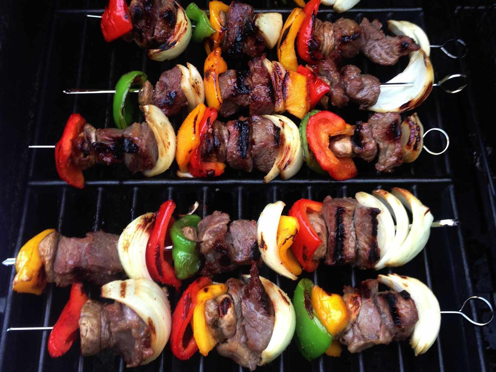

Kabobs

What you need to know about Kabobs
These grilled kabobs made with steak and chicken stay moist and flavorful. The meat and vegetables are marinated in a honey teriyaki sauce, then skewered and grilled until tender and delicious.
Ingredients
- ½ cup teriyaki sauce
- ½ cup honey
- ½ teaspoon garlic powder
- ½ pinch ground ginger
- 1½ pounds skinless, boneless chicken breast halves - cut into cubes
- 1 pound beef sirloin, cut into 1 inch cubes
- 2 red bell peppers, cut into 2 inch pieces
- 1 large sweet onion, peeled and cut into wedges
- 1 ½ cups whole fresh mushrooms
- skewers